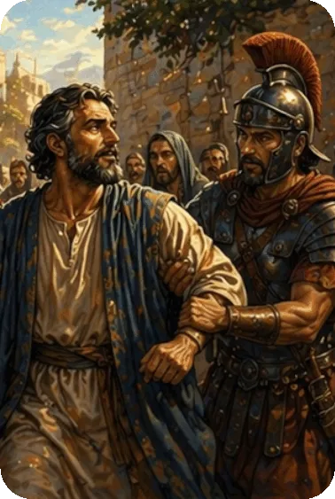

Paul was excited about being able to minister at last in this church, and everyone was well aware of that fact (Romans 1 : 8 – 15). The letter to the Romans was written from Corinth just prior to Paul’s trip to Jerusalem to deliver the alms that had been given for the poor there. He had intended to go to Rome and then on to Spain (Romans 15 : 24), but his plans were interrupted when he was arrested in Jerusalem. He would eventually go to Rome as a prisoner. Phoebe, who was a member of the church at Cenchrea near Corinth (Romans 16 : 1), most likely carried the letter to Rome.
The Book of Romans is primarily a work of doctrine and can be divided into four sections: righteousness needed, 1 : 18 – 3 : 20; righteousness provided, 3 : 21 – 8 : 39; righteousness vindicated, 9 : 1 – 11 : 36; righteousness practiced, 12 : 1 – 15 : 13.
The main theme of this letter is righteousness. Guided by the Holy Spirit, Paul first condemns all men of their sinfulness. He expresses his desire to preach the truth of God’s Word to those in Rome. It was his hope to have assurance they were staying on the right path. He strongly points out that he is not ashamed of the gospel (Romans 1 : 16), because it is the power by which everyone is saved.
The Book of Romans tells us about God, who He is and what He has done. It tells us of Jesus Christ, what His death accomplished. It tells us about ourselves, what we were like without Christ and who we are after trusting in Christ. Paul points out that God did not demand men have their lives straightened out before coming to Christ. While we were still sinners Christ died on a cross for our sins.
Summary of the Book of Romans from GotQuestions.org — is a popular Christian website and "parachurch" ministry that provides answers to a vast array of questions about the Bible, theology, and spiritual life.
Do you have a question? Submit your Bible Questions to GotQuestions.org No need to sign up, just use your email to receive notifications from any answers. Also browse their website for many questions that may answer your questions.
For personal questions, always pray first to God and seek answers through deep prayers. That may answer deep questions in your heart, and mind, as only God, Holy Spirit and Jesus can see through and through on your feelings, thoughts and situation, better than any man can.